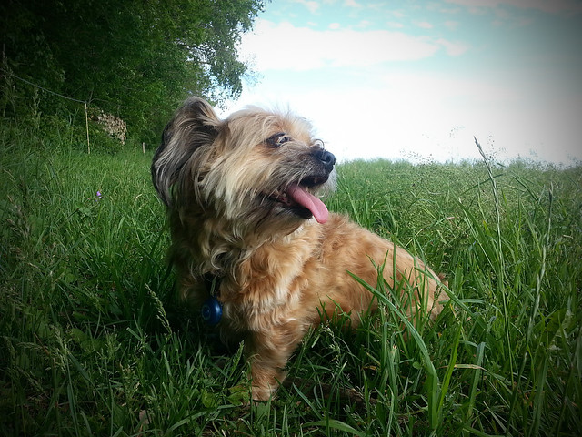

⛏I found a dog in the village.
村で犬を見つけた。
/aɪ ˈfaʊnd ə ˈdɔːg ɪn ðə ˈvɪlɪdʒ/
- found の語末子音 /d/ が a の /ə/ に連結 [ˈfaʊndə] ファウンダ
- the は弱形 /ðə/
アイ ファウンダ ドッグ イン ザ ヴィリジ

⛏I found a dog in the village.
村で犬を見つけた。
⛏My dog follows me when I go mining.
採掘に行く時、犬が僕についてくる。
⛏My dog ate all my food.
犬が僕の食べ物をすべて食べた。
I have five dogs protecting my base from hostile mobs.
敵対的なモブから基地を守る5匹の犬を飼っている。
My dogs will help protect against creepers and other threats.
私の犬がクリーパーや他の脅威から守るのを手伝ってくれるだろう。
That creeper dogs my every footstep in this dark cave.
そのクリーパーはこの暗い洞窟で私のあらゆる足音に付き纏っている。
Bad luck dogs miners who venture too deep without proper gear.
適切な装備なしに深すぎるところに進む採掘者に悪い運が付き纏う。
The phantom dogged me relentlessly through the night sky.
ファントムが夜空を通して容赦なく私に付き纏った。
The horde dogged our position until we escaped to safety.
群れが私たちの位置に付き纏い、安全に逃げるまで続いた。
I was dogged by mobs throughout the entire cave expedition.
洞窟探検全体を通してモブに付き纏われた。
We were dogged by equipment failures and bad weather on the journey.
旅の間、装備の故障と悪天候に悩まされ続けた。
A group of zombies is dogging our progress toward the village.
ゾンビのグループが村に向かう私たちの進行に付き纏っている。
The storm is dogging us as we travel through the Nether.
嵐が私たちをネザーを通じて旅する際に付き纏っている。
The phantom is dogging my position while I try to mine diamonds.
ファントムが私がダイヤを掘っている間に私の位置に付き纏っている。
A creeper is dogging us, and we're running out of time.
クリーパーが私たちに付き纏っていて、時間が無くなろうとしている。
A hostile mob was dogging us through the forest when we found the village.
敵対的なモブが森を通じて私たちに付き纏い、村を見つけたときに続いた。
The storm was dogging our steps, so we had to find shelter quickly.
嵐が私たちの足音に付き纏っていたので、急いで避難所を見つける必要があった。
We realized that bad luck had been dogging our mining operation for weeks.
悪い運が何週間も私たちの採掘事業に付き纏っていたことに気づいた。
The phantom had been dogging me all night before I finally reached the end stronghold.
ファントムが最後にエンド要塞に到達する前に一晩中付き纏っていた。
We have dogged those creepers away from our base since we started.
始めて以来、それらのクリーパーを基地から追い払ってきた。
The phantom has dogged every player in this server for months.
ファントムがこのサーバーのあらゆるプレイヤーを何ヶ月も追跡し続けている。
By the time we reached safety, bad luck had dogged us for three days.
安全にたどり着く頃には、悪い運が3日間私たちに付き纏っていた。
She realized that the creepers had dogged her expedition before she even noticed.
クリーパーたちが彼女が気づく前から彼女の遠征に付き纏っていたことに気づいた。
The storm has been dogging our team all week, slowing our progress.
嵐が私たちのチームを一週間付き纏い続けて、進捗を遅くしている。
Bad luck has been dogging our expedition since the beginning.
始まりから、悪い運が私たちの遠征に付き纏い続けている。
I'll dog that creeper all the way back to my base.
そのクリーパーを私の基地まで追跡して追い払うだろう。
The phantom will dog us until we reach the Stronghold.
ファントムが私たちを追い続けるだろう、私たちがエンド要塞に到達するまで。
The creepers will be dogging our base while we try to build.
私たちが建築を試みている間、クリーパーが基地に付き纏い続けるだろう。
By tomorrow, the storm will be dogging us across the Nether.
明日までに、嵐が私たちをネザー全体に付き纏い続けるだろう。
By the time we reach the Stronghold, the phantom will have dogged us for hours.
エンド要塞に到達する頃には、ファントムが何時間も私たちに付き纏っているだろう。
Before we finish mining, bad luck will have dogged our team several times.
採掘を終える前に、悪い運が私たちのチームに何度か付き纏っているだろう。
⛏I'm dog tired after mining all day.
一日中採掘した後、本当に疲れている。